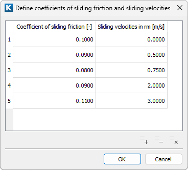

|
|
|


滑动摩擦系数和速度的定义

图55.5：滑动摩擦系数和速度的定义
滑动摩擦系数由制造商根据滑动速度规定。VDI 2241 标准假定使用恒定值。然而，这可能导致计算结果出现较大偏差。通过输入最多 5 个点，可以创建一条连接这些点的折线。程序可以据此导出滑动速度区域起始和结束处的 10 个摩擦系数值。由此得出的 10 个不同的加速扭矩随后可用于计算。
Definition of the coefficients of sliding friction and velocities
Figure 55.5: Definition of the coefficients of sliding friction and velocities
The coefficients of sliding friction are specified by the manufacturers in accordance with the sliding velocities. The VDI 2241 standard assumes that a constant value is used. However, this may result in a large deviation in results. By inputting a maximum of 5 points you can create a poly line that connects these points. From this line the program can then derive 10 values for the coefficients of friction in the sliding velocity areas at the start and at the end. The 10 different accelerating torques derived from this can then be used later on in the calculation.